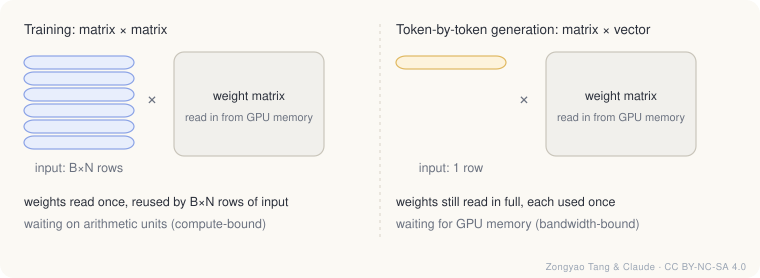
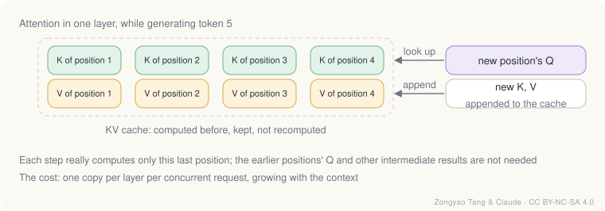

The thread: before optimising, set one rule: always have a "correct version" to compare against → take the Transformer apart, and the operators fall into two kinds that are expensive in different ways → the same matrix multiplication changes character completely when generating word by word → to avoid repeated computation, the KV cache. This unit is the overview of part 4: each of the four units after it tackles one kind.
Part 4 · Operators and kernels4.1 Taking a Transformer apart into operators
Translated by AI (Anthropic's Claude) from the Chinese edition. The Chinese original is the reference.
This unit answersTake a Transformer apart into kernels one by one: what is each? Which are the most expensive?
Follows part 3: use what you know about kernels to look at the Transformer of 1.4 operator by operator.
- Write a correct one first, then a fast one
- Almost all of a Transformer's arithmetic is in matrix multiplications, but not all of its time
- When generating one word, matrix multiplication degenerates into matrix times vector
- The KV cache: what has been computed is not computed again
Explanation
1Write a correct one first, then a fast one
For every kernel, first write the plainest, most readable version and compare it element by element with PyTorch's reference result: look at the maximum absolute error and the relative error. After that, compare with this version again after every optimisation.
What performance work should fear most is not failing to get faster, but getting faster while quietly computing the wrong thing. Errors on the GPU rarely crash the program: an out-of-bounds read returns someone else's data, a race between threads makes the result occasionally wrong, and the program runs to the end and produces a normal-looking number.
The rule. For every kernel, first write the plainest version: one thread computes one output element, no tricks at all, code short enough to see at a glance whether it is right. Then use the same operation in PyTorch as the reference to confirm this plain version is correct. After every optimisation step, compare against it (and PyTorch) again.
How to compare. Floating-point results cannot be required to match bit for bit. As 3.5 explained, a parallel reduction changes the order of additions, and the last few digits differ; that is normal. Look at two quantities:
- The maximum absolute error:
(a - b).abs().max(). - The maximum relative error: the absolute error divided by the size of the value itself.
For 32-bit floats, relative errors of the order of 10⁻⁶ to 10⁻⁵ come from rounding; at 10⁻³ or more, it is a bug. PyTorch's
torch.allclose(a, b, rtol=..., atol=...)combines the two tests.Which inputs to compare on. Not just one shape. At least: very small (1 element, 1 row), not a multiple of the block size (boundary handling is the most error-prone), and very large. Put some special values in the input: zeros, very large numbers, negative numbers.
Why this comes at the start of this part. The next four units are all about "rewriting the computation to make it faster": fusion, tiling, online softmax, recomputation. Each changes the order of operations or drops intermediate results, and each can introduce tiny numerical differences or real errors. Set up the means of checking first, and what follows stands on firm ground. It is the same discipline as "have a baseline first" in 0.2, one for speed, one for correctness.
An analogyLike keeping accounts: first make sure every entry balances, then think about recording faster. With wrong accounts, recording faster is no use.
So small differences that appear during optimisation (the order of floating-point additions changed, as in 3.5) are normal; an error of the wrong order of magnitude means a bug.
SourcesCUDA for LLMs chapter 4: checking results against PyTorch- The maximum absolute error:
- With a way of checking in hand, we can safely take the Transformer apart.
2Almost all of a Transformer's arithmetic is in matrix multiplications, but not all of its time
By amount of computation, the matrix multiplications of the QKV projections, the attention output projection and the MLP take nearly all of it; but softmax, LayerNorm, GELU and the residual additions, element-wise and reduction operators, do almost no computation yet read and write a whole tensor each time, and are typically bandwidth-bound.
List one Transformer layer from 1.4 in order of execution, marking which kind each operator belongs to (judged by the arithmetic intensity of 3.3: how many operations per byte read or written).
Operator What it does Kind LayerNorm Subtract the mean and divide by the standard deviation at each position Bandwidth-bound Q, K, V projections Three matrix multiplications Compute-bound QKᵀ Matrix multiplication giving N×N scores Compute-bound, but with a large output Scaling, mask, softmax Element-wise plus reductions Bandwidth-bound, applied to N×N Times V Matrix multiplication Compute-bound Output projection Matrix multiplication Compute-bound Residual addition Element-wise Bandwidth-bound LayerNorm As above Bandwidth-bound MLP first layer Matrix multiplication, dimension widened 4 times Compute-bound GELU Element-wise, on the 4 times wider tensor Bandwidth-bound MLP second layer Matrix multiplication Compute-bound Residual addition Element-wise Bandwidth-bound Where the arithmetic is. In a matrix multiplication every weight takes part in multiply-adds, an enormous number of operations; in a residual addition each element gets one addition. So by count of floating-point operations, matrix multiplications take 99%. That is why the 6N estimate of 1.5 counts only matrix multiplications.
Where the time is. Time does not depend on operation counts alone. Bandwidth-bound operators do almost no arithmetic yet read the whole tensor from memory once and write it once. A layer has seven or eight of them, GELU acting on a 4 times wider tensor and the softmax group on an N×N tensor. Executed eagerly, each is a separate kernel with its own read and write. Together they can take a considerable share of a step's time while being nearly negligible in arithmetic.
So optimisation splits in two, and each of the next four units takes one stretch:
- The compute-bound matrix multiplications: make good use of Tensor Cores and tiling (4.5), and low precision (1.5, 2.6). In practice, call a library.
- The remaining, bandwidth-bound operators: fewer reads and writes. Merge neighbours (fusion, 4.2); and never let attention's N×N intermediate result touch memory at all (4.4).
This table is also the reference for reading profiler output: when some kernel is near the top, first check which kind it belongs to, and you know in which direction to look for a cure.
An analogyLike a factory with only a few machine tools that actually process the product, and a crowd of steps for moving and labelling, each of which fetches the goods from the warehouse and puts them back.
So optimisation goes two ways: matrix multiplications rely on Tensor Cores and tiling (4.5); the rest rely on fewer reads and writes, that is, fusion (4.2) and never writing out, as Flash Attention does (4.4).
Used later in What can be fused: a chain of element-wise operations, plus the reduction that follows themSourcesCUDA for LLMs chapter 5: a naive kernel for inference- Above we said matrix multiplications are compute-bound. That holds in training, but not when generating word by word.
3When generating one word, matrix multiplication degenerates into matrix times vector
When generating word by word, only one new token is processed at a time, so each layer's matrix multiplication becomes "matrix × vector": the whole weight matrix is read from memory once, and each weight is used only once. The arithmetic intensity is only about 1 FLOP/B, completely held back by memory bandwidth.
In training. A batch has B sequences of N positions each, all computed at once. A linear layer computes "a matrix of (B×N) rows × the weight matrix". The weight matrix is read from memory once and reused by B×N rows of input. Each weight read takes part in B×N multiply-adds. Arithmetic intensity is high, and the bottleneck is the arithmetic units.
When generating word by word. As 1.4 explained, generation comes one token at a time. Each step has only one new position to compute. The same linear layer now computes "1 row × the weight matrix", that is, matrix times vector. The weight matrix still has to be read from memory in full, but each weight does only 1 multiply-add and is then of no more use until the next token.

The same weight matrix: used many times in training, each weight used once in generation Arithmetic intensity drops from "hundreds or thousands of operations per byte" to "less than one operation per byte". The arithmetic units are almost idle, and all the time goes into moving the weights out of memory.
This gives a very simple estimate. Generating one token reads all of the model's weights once. So
the most tokens per second ≈ memory bandwidth ÷ total bytes of the model's weights
A 7B-parameter model stored in 16 bits is 14 GB. On a GPU with about 1 TB/s of memory bandwidth, at most about 70 per second. In practice lower, because of reading and writing the KV cache and other overheads.
The estimate points to two roads to speed.
- Shrink the denominator: store the weights in fewer bits. Quantised to 4 bits, the denominator is a quarter of what it was (9.2).
- Make each read of the weights "do more work": put several users' requests together, read the weights once and compute one token for each of B requests, back to matrix times matrix (batching, 9.1).
One operator, two characters. This is a good example of "first ask what it is waiting for" from 0.1. The same
nn.Linear, in training waits for the arithmetic units, in inference waits for memory. So training and inference want different hardware characteristics and suit different optimisations.An analogyLike hauling every ingredient out of the warehouse and looking it over, just to take a pinch for one dish.
So a single user's generation speed is capped at about "memory bandwidth ÷ the model's bytes": a 7B model in fp16 is about 14 GB, at most seventy-odd tokens a second on a 1 TB/s GPU. Quantisation (9.2) and batching (9.1) both deal with this.
Builds on Arithmetic intensity: how many operations per byte movedThe causal mask: training processes a whole text in parallel, generation goes word by wordUsed later in Prefill is limited by compute, decode by bandwidthIn inference, what quantisation mainly saves is bandwidth, not computeComputing less: prefix caching and speculative decodingWork out the theoretical ceiling first, to know how far there is to goSourcesCUDA for LLMs chapter 5: matrix multiplication becomes matrix-vector multiplication- Generating word by word has an even more obvious waste.
4The KV cache: what has been computed is not computed again
When generating word t, the K and V of all the earlier words were already computed in previous steps. Keep them, and each step computes Q, K and V only for the new word, then does attention with the K and V in the cache.
Without a cache. To generate token t, the plainest way is to feed all t−1 earlier tokens through the model again. Generating 1000 tokens computes 1 + 2 + … + 1000 "positions", about 500,000. The computation grows with the square of the length.
What is repeated. The causal mask (1.4) guarantees that a position's computation depends only on the positions before it. So the intermediate results of position 5 in every layer do not change because tokens 6 and 7 were generated later. In each step only the last position is truly new.
What the new position needs from earlier positions. In each layer's attention, the new position takes its own Q, computes scores against the K of every earlier position, and takes a weighted sum of their V. It needs only the earlier positions' K and V, neither their Q nor any of their other intermediate results.

The new position takes its own Q and looks up the K and V in the cache The KV cache. Every layer keeps the K and V it has already computed. For each new token generated:
- Feed only this one token into the model.
- In each layer, compute its Q, K and V; append K and V to this layer's cache; do attention with its Q against all the K and V in the cache.
Each step's computation drops from "proportional to the current length" to "one position" (the attention step still looks at the whole cache, but that is just one matrix times vector). The total computation for generating 1000 tokens drops from about 500,000 positions to 1000.
The price is memory. The cache size per request = 2 (K and V) × number of layers × sequence length × hidden dimension × bytes per number. A model with 32 layers and a hidden dimension of 4096, stored in 16 bits, takes 2 × 32 × 4096 × 2 bytes ≈ 0.5 MB per token. A context of 8000 tokens is 4 GB, and every concurrent request needs its own.
So in an inference service, how many requests one GPU can serve at once is often decided not by compute but by whether the KV caches fit. The memory management of 9.1 and 9.3 is mainly about this.
Two ideas from 0.1 appear here at once: keep computed results at hand and reuse them, and its counterpart, trade memory for computation.
An analogyLike the character notes a novelist keeps while writing a long book: writing a new chapter means looking at the notes, not rereading the book from the start.
So the computation for each generated word drops from "growing with the square of the length" to "growing linearly with the length", at the price of memory: the KV cache grows with both the sequence length and the number of concurrent requests (9.1).
Builds on Attention is a "soft" table lookupUsed later in The KV cache is the bulk of inference memoryComputing less: prefix caching and speculative decodingSourcesCUDA for LLMs chapter 5: the KV cache
Putting it together
Before optimising, have a correct version, and compare with it after every step. A Transformer's operators fall into two kinds: matrix multiplications account for the arithmetic and are limited by compute; normalisation, activations and softmax do almost no arithmetic and are limited by bandwidth. When generating word by word, matrix multiplication degenerates into matrix times vector, and becomes bandwidth-bound too. The KV cache trades memory for repeated computation.
Test yourself
Without looking back at the explanation, say it in your own words.
- Why keep a plain, correct version when optimising a kernel? How do you judge that an optimised version "computes correctly"?
- What operators does one layer of a Transformer have? Which are limited by compute and which by bandwidth?
- Why is matrix multiplication bandwidth-bound when generating word by word? How is the ceiling on a single user's generation speed estimated?
- What does the KV cache store? From what to what does it reduce the computation of generation? What does it cost?